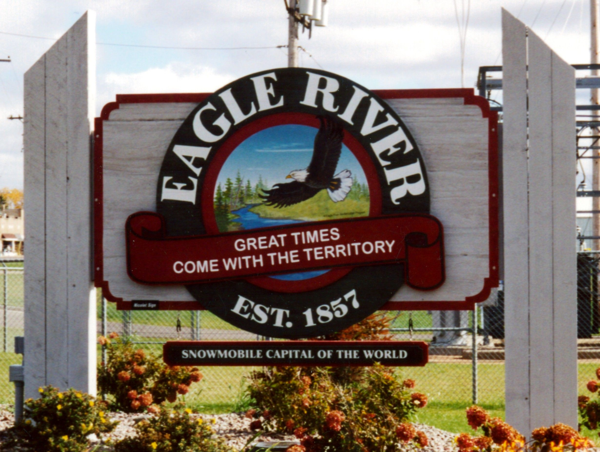
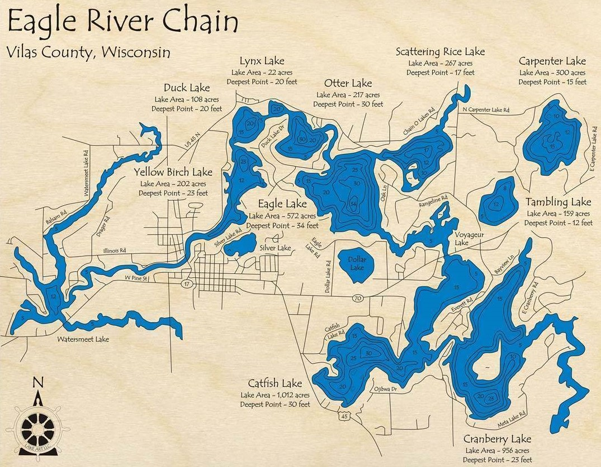

Welcome to Eagle River, Wisconsin!
Welcome to Eagle River, WI! We are home to the World’s Largest
Chain of 28 Connected Lakes and are also known as the Snowmobile
Capital of the World.
There's lots to do between days on the lake and visiting one of
the many authentic shops or restaraunts in town.
We have pizza places and sandwich shops along with a popcorn store
and multiple gourmet candy stores.
There are also great souvenir shops like Arrowhead and others.
There are great ice cream shops and other restaraunts out of
town like Lucy's Lunchbox and Eagle Waters Resort.
There's delicious fish frys and awesome ski shows.
There are many different resorts to stay at as well like
Eagle Waters or the Chanticleer.
We have all the basic necesities a modern town has along
with fantastic tourist attracitons.
There are grocery stores, gyms, restaraunt chains and much more.
There are also many great places nearby, like Three Lakes, St. Germain, and Minocqua.
You'd have a great time up in Eagle River!


For more information, contact Andrew Brandmeier
here.
© Eagle River Chamber of Commerce | 19 December 2020